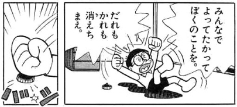

| 「どくさいスイッチ」の話に見る、社会的物語の力: ―あなたは無思考に生きる、「社会のお人形さん」になっていませんか？ | |
| F_Sano_ | |
| (2018) | |
ある日ふと、のぶ代版ドラえもん（第２作第１期）の頃の、某寿司チェーン店のCMを思い出し、それをきっかけに、記憶に残っている話をいくつか観返しました。
「人生やり直し機」、「無人島へ家出」、「のび太もたまには考える」（能力カセット）、「のび太の地底文明説」（異説クラブメンバーズバッジ）、「走れのび太! ロボット裁判所」（アニメオリジナル）等々、記憶に残っている話は多くありますが、中でも強く記憶に残っているのは、「どくさいスイッチ」の話。
わさび版ドラえもん（第２作第２期）でも放送されたので、内容のインパクトの強さから、幅広い年代の人の記憶に残る話となっているのではないでしょうか。
さて、私の場合、原作とのぶ代版アニメで「どくさいスイッチ」の話を幼少期に見てから、かなりの時間が流れているので、改めて「どくさいスイッチ」の話を見てみると、やはり、子どもの頃には感じなかったことを感じるわけです。
ただそれは、「やっぱり、他人を大切にしなければいけないんだなぁ」という「社会通念」的なことでも、「世界線」や「存在論」といった、SF批評的な視点からのものでもありません。
改めて「どくさいスイッチ」の話を見て思ったのは、私の「思想モドキ」の一部に重なること（「根源的に、人には他人の道具や手段としての価値以外の価値などない 」）が実によく現れている、ということ。そして、多くの人がその箇所に疑問や違和感を抱いていないであろう状況に、いかに社会的な物語の力が人を支配しているかが現れている 、ということです。
本書では、それが具体的にどのようなものであるかを述べていきます。
あなたは無思考に生きる、「社会のお人形さん」になっていませんか？
まず、「どくさいスイッチ」の話の概要を示しておきましょう。
◆
野球の試合に参加したのび太。いつも通り、エラーや三振を連発。
試合は惨敗。のび太のせいで負けたと非難され、ジャイアンに暴力を振るわれる展開に。
家に帰ったのび太は、それをドラえもんに話す。
ドラえもんは、のび太が下手なのが悪いと言い、練習を勧めるが、のび太は、ジャイアンが悪い、あいつさえいなくなれば......という反応。
「そんなふうに考えるの......」と言い、ドラえもんが出した道具が「どくさいスイッチ」。自分に反対する者や邪魔になる者を消す道具である。
使用を躊躇するのび太。しかし、再びジャイアンに暴力を振るわれると、スイッチを押してジャイアンを消してしまう。結果、ジャイアンは存在していなかったことに。
人を消してしまったことに恐怖するのび太。そこに、ジャイアンのポジションに置き代わったスネ夫が現れ、暴力を振われそうになると、同じようにスネ夫も消してしまう。
その後家に帰ったのび太は、昼寝中、皆に非難される夢をみる。そして、「だれもかれも消えちまえ」という寝言と共に、スイッチを押してしまう。

世界中の人間を消してしまったことに気付くのび太。
はじめは慌てふためいていたが、「やったことはしかたがないじゃないか！」「この地球がまるごとぼくのものになったんだ。」と切り替え、状況を楽しみ始める。
しかし、今後の不安（食料事情など）や、一人でいることに寂しさを感じ、状況を楽しみきれないのび太。
夜に停電になると、のび太は耐えられなくなり、「ひとりでなんて...、生きていけないよ...」と泣きだしてしまう。
そこに、「気に入られないからってつぎつぎに消していけば、きりのないことになるんだよ。わかった？」という台詞と共にドラえもんが登場。
元に戻った世界で、のび太はジャイアンたちに野次を飛ばされながら、野球の練習。「まわりがうるさいってことは、楽しいね」という台詞で話は終わる...。
＊ 出典： 藤子・Ｆ・不二雄『ドラえもん』15巻（てんとう虫コミックス、1997）
◆
上記の概説は原作を元にしていますが、のぶ代版、わさび版のアニメでも、内容は大体同じです。
さて、改めて「どくさいスイッチ」の話を確認して、どう思いましたか？
「人は一人では生きていけないから、他人を受け入れて生きていかなければならない」ということを、〝再認識〟しましたか？
これは、社会で広く共有されている認識ですよね？
そして、この話は、極論的な世界を示すことで、それを読者に再認識させるものだと考えられます。
......「人は一人では生きていけない」 、だから、「他人を受け入れなければならない」 という認識。〝それ自体〟には、特に問題はないと思います。
しかしこれは、同じく社会で広く共有されているはずの、「他人を道具や手段として利用してはならない」という認識と、果たして並立するものでしょうか。
もう一度、読んでみてください。
「人は一人では生きていけない。〝だから〟、他人を受け入れなければならない」
そして、〝だから〟の前後の関係を考えてみてください。
自分が生きていくために、他人を道具や手段として利用する。それを良しとしなければ、この認識は成り立たないのではないですか？
この「どくさいスイッチ」の話でも、のび太は「ひとりでなんて...、生きていけないよ...」と嘆いていますが、これは、一人では生きていけないから、他人が必要だということですよね？
食料や各種インフラの供給、孤独の淋しさ。そういった問題を解決する〝手段〟として他人が必要だということですよね？
「人は一人では生きていけないから、他人を受け入れて生きていかなければならない」という文が分かりにくければ、「人は一人では生きていけないから、他人が必要である」と言い換えても同じことです。
自分が生きていくために他人が必要である、ということは、他人を道具や手段として捉えていることに他ならないのです。
さて、私が以上から言いたいことは２つ。
１つは、冒頭で「私の『思想モドキ』のうちの１つが実によく現れている」と述べたことで、それは、「人には、他人の道具や手段としての価値以外の価値などない」ということです。
「どくさいスイッチ」の話は、これがよく分かるものになっているのではないでしょうか？
のび太の認識が、「人は一人では生きていけないから、他人を受け入れて生きていかなければならない」というものであることは間違いありません。
そして、多くの人は、この話を読んでのび太の考えに同意することはあっても、否定したり疑問視したりすることはないでしょう。
であれば、皆さんの多くは、「人は一人では生きていけないから、他人を受け入れて生きていかなければならない」という認識と同時に、「人を道具や手段とすることを〝良しとする〟」という認識を持っていなければ、おかしい のです。少なくとも、〝知性有しヒト〟であるならば、当然そうでなければおかしいでしょう。
......しかし実際は、そうでないと〝思う〟人が多いはずです。それは何故か？
ここからは、私が言いたいことの２つ目とも関係してきます。
それは冒頭の表現では「いかに社会的な物語の力が人を支配しているか」ということであり、私の「思想モドキ」の表現では、いかに「社会的物語」によって人が組み立てられ、いかにそれに操られているか 、ということです。
なぜ、「人は一人では生きていけないから、他人を受け入れて生きていかなければならない」と、「人を道具や手段として利用してはならない」という、社会において広く通用している認識を、〝疑問なく〟同時に持ちつづけているのか。
どちらも「自分の思考の帰結」として有しているのであれば、それらが普通は同時に成り立たないことに気付く機会もあったはずです。しかし、現実はそうではない。
これは端的に言えば、そのような「社会において広く通用している認識」の大半は、「社会的な物語」であり、所与のもの（前提）として、正誤の判断の過程なく、人に植え付けられるもの だからです。
（「社会化」という用語をご存じの方は、この段階では同じ事を指していると考えてくれて構いません）
そのような「物語」は、唯一普遍であり、絶対的な価値を持つもの〝ではありません〟。
〝故に〟、この「社会的な物語」は、時代によって変わっていきます。
最近の非常に分かりやすい例としては、「適齢期を迎えたら、結婚をするのが当然であり、それが〝幸せ〟（であり、〝義務〟）である」という社会的な認識が揺らいできたことが挙げられるでしょう。
（地域にもよりますが）このような認識は、数十年前には広く、そして強く共有されていたはずです。しかし、今は違う。この揺らぎを戻そうという力も働いていますが、完全に元には戻らないでしょう。
また、この「適齢期を迎えたら、結婚をするのが当然であり、それが〝幸せ〟であり、〝義務〟）である」という物語は、全ての人が「自分の思考の帰結」としてそれを導いたものではない、ということが分かりやすい例でもあります。
皆が一から自分の頭で（所与のものなく）結婚の価値を考え、それをすり合わせて、このような社会的な認識を作った、と思いますか？ さすがにそれは無理がありませんか？ そのような物語の下に、〝人間が〟作られた、というのが現実ではないでしょうか。
この物語と同じように、「人は一人では生きていけないから、他人を受け入れて生きていかなければならない」ということ、「人を道具や手段として利用してはならない」ということは、所与のものとして、正誤の判断の過程なく、人に植え付けられてきたのです。
そして、正誤の判断の過程なく、植え付けられてきたために、普通に考えれば同時に成り立たないことを、各人が抱える結果となっている わけです。
...さて、「そもそも私は、人を道具や手段とすることを良しと〝していない〟」と反対する方もいることでしょう。
では、そのような人は、「自分が生きていくために他人が必要である」という認識も否定するということでしょうか？ それが出来ずに、「人を道具や手段として利用してはならない」という認識は、成り立たないのでは？
もちろん、これに理由をつけることも可能ではあります。
しかし、その理由とは、「人にはすべからく価値があるから」（道具や手段としての価値ではない、原始的な価値）といった程度のものであり、「それはなぜ？」と疑問を投げかけていけば、いずれ答えられなくなるものです。
唯一、「神」（のようなもの）を持ち出せば、「神がそうしたから」「それが神の意思だから」と答えることが可能ですが、それは本当に〝答え〟になっていると思いますか？ それに、「神」と言っても、どんな神がいくついるのかも分かったものではありません。
さて、皆さんも一度考えてみてください 。
「『人にはすべからく価値がある』（道具や手段としての価値ではない、原始的な価値）のはなぜですか？」
なお、ここで聞いているのは〝理由〟です。〝目的〟ではありません 。
おそらく、「『人にはすべからく価値がある』とする〝目的〟」であれば、多くの人が答えられるでしょう 。
......端的に言えばそれは、「そうしないと困るから」ではないですか？
何が困るのでしょう？
それは、「社会が」ではないですか？ あるいは、「社会の一員としての自分が」ではないですか？
私がこれまで単に「物語」と言わず、「社会的（な）物語」という言い方をしたのは、こういった理由からです。
社会がその存続のために作り出した物語、それが「社会的（な）物語」なのです。
「人は道具・手段としての価値〝以外の〟価値を、すべからく有している」という認識も、社会的物語の１つでしかない のです。
人には道具・手段としての価値しかないとしてしまえば、社会の成員である人間は、明確な形でお互いを消費し合い、そこに明確な形で強者と弱者が生れます。弱者は食いつぶされ、それが良しとされます。
それはそれで、合理的な社会だと言えるでしょう。皆が皆を道具や手段として利用し、結果、高い知能を有した個体が生産や消費を拡大していくことは、能力の低いものにも等しく価値を認めるよりは、ある意味、合理的です。
しかし、それでは社会の予見可能性が確保が難しくなります。
分かりやすく言えば、弱者をコントロールしきれなくなる事態が容易に想像でき、社会秩序は決して安定に至りません。
また、致命的なのは弱者の再生産が促されないために、強者の内の下位が消費されていく構造となることです。時間経過とともに、弱者の知能レベルが高くなっていき、その社会的なコントロールは加速度的に困難になります。
そこで、「人は道具・手段としての価値〝以外の〟価値をすべからく有している」という物語が必要になるわけです。
「すべての人は、生まれながらにして、絶対的な価値を持っている。それは、道具・手段としての価値といったもの以前の、根源的、絶対的な価値である」
「そして、人を道具・手段として用いることは、その絶対的価値を侵害するものである。〝だから〟、人を道具・手段として用いてはならない」と。
......分かりますか？
「すべての人は、生まれながらにして、絶対的な価値を持っている。それは、道具・手段としての価値といったもの以前の、根源的、絶対的な価値である」〝ということにしている〟から、「人を道具・手段として用いてはならない」のです。
結局は、そういう〝お話〟でしかないわけです。それが故に、私は「物語」という表現を使うのです。
改めてお聞きしましょう。
「すべての人は、生まれながらにして、絶対的な価値を持っている。それは、道具・手段としての価値といったもの以前の、根源的、絶対的な価値である」となぜ言えるのですか？
〝目的〟ではなく、〝理由〟があるかを考えてみてください。
これは、既に挙げた「『人にはすべからく価値がある』のはなぜですか？」という質問と同じだと、お分かりいただけるでしょうか？
結局、「神」（のようなもの）を持ち出さない限りは、〝目的〟は答えられても、〝理由〟は答えられないのです。
なぜなら、それは「物語」にすぎないから 。所与のものとして、価値判断の過程なく植え付けられ、共有されてきた「社会的物語」にすぎないからです。
（世界に「神」が存在する理由の１つも、同じです。「神」が「そう決めた」としなければ、社会的規範に理由を持たせられないからです）
「社会的物語」についてのこれ以上の説明は、私のブログ（「生き永らえる」日々）内の 「『生きるのが辛い』人へ」の記事 を参照してもらいたいと思いますが、最後に、私が言いたいことの１つ目として挙げたことを、もう一度挙げておきましょう。
「人には、他人の道具や手段としての価値以外の価値などない」
......果たして、皆さんはこれにどう反応するでしょうか。
「そういうことにしておかないと困る」と答えれば、それは、既に述べたように、社会の維持という目的のために作られた「物語」であることを認めたことになるでしょう。
しかし、そうであるなら結局、社会の維持という〝目的の達成手段〟として、人を道具や手段としていることになりませんか？ 根源的に、皆が皆にとって道具や手段となっているのではないですか？ そこから離れた価値が果たしてあり得るのでしょうか。
......「〝社会のため〟であれば、人を道具や手段として用いることも許される」と考えますか？ 社会の存続のためであれば、そうであるべきだ、と。
これまでの人類社会というのは、おそらくそういった考えの下に成り立っていたのでしょう。
しかし、いつからか、そのような社会自体が（手段ではなく）目的となってしまった のではないでしょうか。
所与のものとして社会的物語が価値判断の過程なく植え付けられることで、その構造が強化され続け、いつしか、それを疑うことができなくなってしまった のはないですか？
そこに果たして〝知性有しヒト〟は存在しているのでしょうか？ ただの社会的な〝お人形さん〟に成り下がっているのではないでしょうか？
......ただ、今はその状況も少しずつ変わってきています。
先述した「結婚」についての認識などは、そのいい例でしょう。
結局、私が言いたいことというのは、全ての人が社会的物語の存在を〝認識〟し、「それは所与のものとして与えられたものであり、絶対的なものではない」ということを確実に認識してもらいたい、ということです。
社会は、人にとっての必要性から、人が作ったものです。それなのに、いつしか多くの人は社会自体に絶対的な価値を疑わなくなってしまった。社会に人が消費されることを良しとするようになってしまった。
そして、その社会は絶対的な価値があるものとされているために、そこに人の進歩は生まれない。 同じ計算式から同じ答えを出すことの繰り返しでは、その計算の処理の仕方が変わることがあっても、答え自体が変わることはありません。
社会自体が目的ではないということ。少なくともこれだけは、皆さんに認識してもらいたい。
そうすれば、ヒトは、〝知性有し〟存在として、再び前進していけるのではないでしょうか。
◆
奥付
タイトル： 「どくさいスイッチ」の話に見る、社会的物語の力 ---あなたは無思考に生きる、「社会のお人形さん」になっていませんか？
著者： F_Sano_
公開日： 二〇一八年八月十三日
◆
関連情報
ブログ：
「生き永らえる」日々
http://f.sano.com/
問い合わせ先（ブログ内メールフォーム）
Twitterアカウント
◆